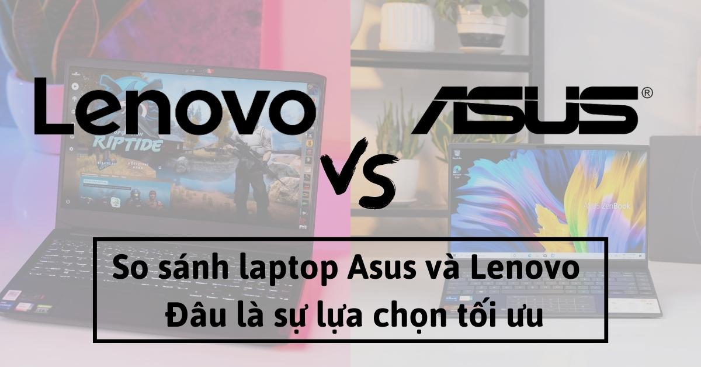
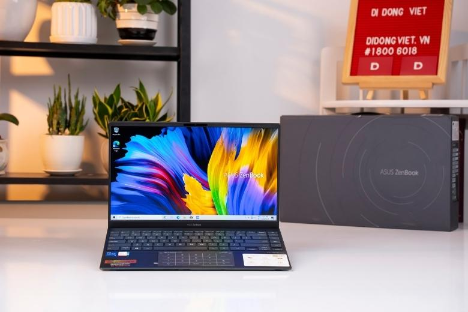
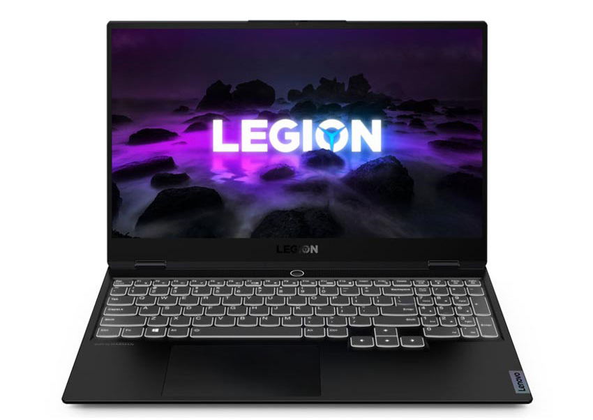
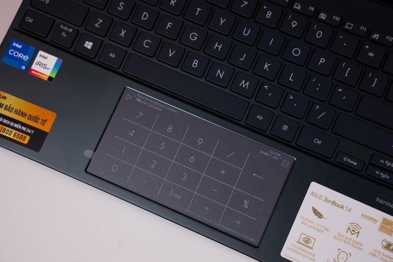
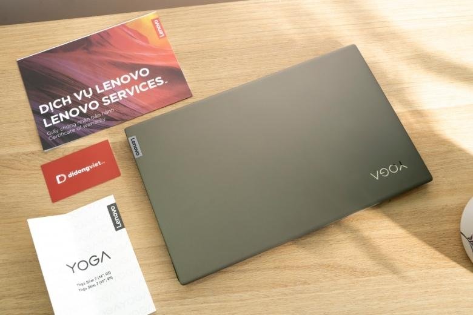
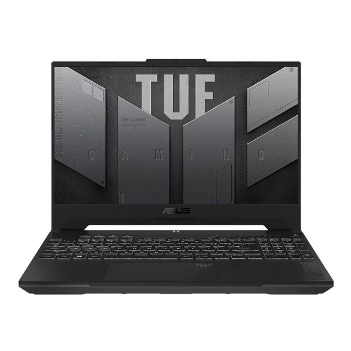

So sánh laptop ASUS và Lenovo, hãng nào tốt hơn, nên mua của hãng nào?
Nếu bạn đang tranh luận về việc nên chọn mua máy tính xách tay của ASUS hay Lenovo, tìm hiểu ngay bài so sánh laptop ASUS và Lenovo dưới đây để có những đánh giá khách quan liệu hãng nào tốt hơn và nên mua laptop của thương hiệu nào nhé!
Laptop Asus và Lenovo là một trong trong những thương hiệu lớn có thiết kế độc đáo thu hút người dùng. Hai dòng máy này không chỉ nổi tiếng về sức mạnh hiệu năng, mà còn rất thu hút về phong cách thiết kế. Nếu như bạn đang phân vân lựa chọn giữa hai chiếc máy này, thì hãy xem qua bài so sánh laptop Asus và Lenovo dưới đây nhé.p> 
So sánh laptop Asus và Lenovo về mặt thiết kế
Để nói dòng máy nào đẹp hơn thì khó mà có được một nhận định chính xác vì sở thích về phong cách của mỗi người là khác nhau. Nhưng nếu nói đến thiết kế có nhiều sự bức phá hơn, nổi bật hơn thì nhà Asus có vẻ nhỉnh hơn một chút. Theo những đánh giá về laptop Asus, nhiều dòng máy có thiết kế vô cùng bức phá thu hút, vật liệu chất lượng chuẩn bền bỉ ở bất kỳ phân khúc giá nào.
Trong thời gian mới đây hãng đã cho ra mắt một bộ đôi laptop Vivobook S15/S14 với tận 4 màu sắc lựa chọn đầy đột phá. Màu bạc, xanh Cô ban, hồng và rêu, những tông màu cực độc đáo ấn tượng. Với thiết kế là 2 mặt kim loại vô cùng cứng cáp kết hợp cùng với bản lề ErgoFit thông minh, siêu mỏng.
Nhà Asus đã dành được một số giải thưởng ấn tượng về thiết kế đặc biệt là với dòng ROG và ZenBook. Mới đây thương hiệu này cũng đã giới thiệu màn hình ScreenPad cảm ứng LCD. Để thay thế cho bàn di chuột cũ, không chỉ phục vụ như một touchpad mà còn là một màn hình đa chức năng đầy ấn tượng.
Đối với Lenovo phong cách thiết kế của hãng hầu hết đều đi theo một tiêu chí nhất định. Hãng luôn hướng đến thiết kế tối giản. Kết hợp cùng điểm nhấn logo cực kỳ hợp với những ai yêu thích phong cách tôn trơn điểm nhấn nhẹ nhàng.
Nhưng nhìn chung các sản phẩm của hãng đều có cùng một phong cách thiết kế. Vì thế Lenovo chưa có nhiều sự khác biệt bứt phá như dòng máy của nhà Asus. Ưu điểm của dòng máy này chính là thiết kế nhỏ gọn, hơn hầu hết các loại máy tính xách tay, đảm bảo linh động di chuyển.
Bên cạnh đó trong thiết kế của nhà Lenovo luôn được trang bị một bản lề sáng tạo. Đem đến góc nhìn và làm việc vô cùng tuyệt vời cho người dùng. Thiết kế kết hợp cùng với bàn phím chống tràn, tạo nên một nét đẹp sang trọng bên trong.
So sánh laptop Asus và Lenovo về cấu hình
Cấu hình là một trong những điều người dùng quan tâm nhất khi lựa chọn máy. Chúng ta hãy cùng xem xét những thành tựu nổi bật của hai thương hiệu này nhé.
Asus đã khởi nghiệp bằng việc tự sản xuất ra bo mạch chủ. Là một thương hiệu có chuyên môn tuyệt vời ở trong lĩnh vực này. Một số dòng máy cao cấp của hãng đã được tích hợp màn hình Full HD cùng với màn hình NanoEdge cảm ứng
Nhà Asus đã tích hợp bộ xử lý Kaby Lake R thế hệ thứ 8 trên một số model máy của mình. Cùng với đồ họa chuyên dụng NVIDIA GeForce MX150, Công nghệ Asus Pad đem đến những cải tiến cao cấp hơn của hãng.
Đối với nhà Lenovo hiệu năng máy vẫn được đánh giá là ổn định trên thị trường. Hầu hết các dòng máy đều được trang bị ổ cứng SSD nhanh chóng, đem đến hiệu suất làm việc nhanh gọn và đáng tin cậy.
Các dòng máy nhà Lenovo thường được trang bị nhiều bộ vi xử lý khác nhau. Từ Core i3 ở phân khúc giá rẻ đến Core iX trong phân khúc mẫu máy cao cấp. Hầu hết tất cả các dòng máy đều được trang bị màn hình IPS, chất lượng màu sắc luôn hiển thị tốt và chân thực.
So sánh laptop Lenovo và Asus về công nghệ
ZenBook đã được nhà Asus trang bị cho ScreenPad mới thay thế cho touchpad cổ điển. Đây là một tính năng độc quyền cực độc đáo của nhà Asus. Bên cạnh đó, dòng laptop gaming ROG Zephyrus cũng được cải tiến, thay đổi thiết kế trở nên siêu mỏng nhẹ.
Về công nghệ thì Lenovo cũng mang đến cho các dòng sản phẩm của mình với những cải tiến nổi bật. Đặc biệt là dòng ThinkPad X1 Carbon với công nghệ hiện đại HDRI hình ảnh dải tương phản động cộng. Ngoài ra còn có bộ vi xử lý Qualcomm được trang bị trên dòng Miix 630 đầy nổi bật.
Nhìn chung, cả hai đều được trang bị tính năng độc đáo mà các thương hiệu khác không thể có được.
Tính đa dạng các dòng sản phẩm cũng là tiêu chí khi so sánh laptop Asus và Lenovo
Các dòng sản phẩm Asus cung cấp đi từ máy tính xách tay, máy phân khúc giá rẻ, tầm trung, gaming, bản cao cấp dành cho doanh nhân đều có đủ. Mỗi mẫu mã sản phẩm được cho ra mắt đầu phù hợp phục vụ từng đối tượng khách hàng khác nhau.
Bên cạnh đó Asus còn cho ra mắt dòng máy 2 trong 1 đầy tiện ích, một dòng máy phục vụ tốt mọi nhu cầu sử dụng của người dùng. Vừa mang tính mỏng nhẹ linh động của một dòng máy tính xách tay, lại vừa mang trên mình một hiệu năng mạnh mẽ.
Nhà Lenovo cũng không hề kém cạnh khi cung cấp đa dạng các loại máy xách tay, nhưng không được nhiều như Asus. Hãng đã cung cấp sản phẩm tuyệt vời cho khách hàng có kích thước nhỏ gọn 2 trong 1, mỏng nhẹ kết hợp hiệu năng mạnh mẽ.
Bên cạnh đó, laptop Lenovo không tập trung quá nhiều vào dòng gaming. Dòng máy của hãng được thu hút nhiều hơn với đối tượng khách hàng là học sinh, sinh viên. Ưu tiên tính linh động, cần một thiết bị nhỏ gọn, hiệu năng mạnh mẽ để mang theo di chuyển làm việc, học tập, tiện lợi.
Vì vậy, có thể thấy xét về tính đa dạng sản phẩm, Asus có nhiều lựa chọn sản phẩm tuyệt vời hơn so với Lenovo.
So sánh laptop Asus và Lenovo về mức giá
Asus là một thương hiệu có định giá máy tính xách tay khá là khách quan. Bạn có thể nhận thấy điều này khi so sánh thông số kỹ thuật với các thương hiệu khác. Do tiền thân là đơn vị sản xuất thiết bị gốc nên hầu hết các thành phần đều do hãng tự sản xuất ra. Vì vậy, giá thành của nó cũng nằm trong mức giá hợp lý.
Lenovo là một trong những thương hiệu máy tính xách tay có nhiều mức giá khác nhau cho từng phân khúc. Khi so sánh cấu hình máy với các thương hiệu khác cùng cấu hình thì máy có giá nhỉnh hơn một chút.
Ví dụ: chúng ta sẽ so sánh cấu hình giữa laptop Lenovo Yoga 920 và laptop Asus ZenBook Flip. Thông số cấu hình của hai con máy này là một chín một mười, ngang ngửa với nhau. Nhưng mức giá của con ZenBook Flip là 1300$, trong khi đó con Lenovo Yoga 920 là 2000$.
So sánh laptop Asus và Lenovo về mức giá bán các sản phẩm trên thị trường hiện nay thì cũng như sản phẩm đa dạng. Chắc chắn mức giá bán của nhà Asus cũng sẽ đang dạng nhiều phân khúc hơn so với Lenovo.
Nên chọn Asus hay Lenovo
Nếu như bạn đang tìm mua một con máy có giá thành phù hợp thì những linh kiện, bộ phận chất lượng cao, tính năng độc đáo thì Asus chính là lựa chọn tuyệt vời cho bạn.
Nếu như bạn là sinh viên và doanh nghiệp, đang tìm một chiếc laptop văn phòng ưu tiên tính linh động. Có thể sử dụng linh hoạt với một hiệu năng ổn định phục vụ công việc thì Lenovo là một lựa chọn hoàn toàn hợp lý.
Sau khi đã so sánh laptop Asus và Lenovo về tổng thể, nếu bạn vẫn còn băn khoăn thì hãy xem lại ưu nhược điểm của từng dòng dưới đây:
| Tiêu chí | Laptop Asus | Laptop Lenovo |
|---|---|---|
| Thiết kế | Thiết kế máy đa dạng cho từng dòng nhiều sự bức phá nổ bật. | Tốc độ, hiệu năng ổn định, mượt mà . |
| Âm thanh | Âm thanh chân thật sống động | Âm thanh loa đem đến trải nghiệm giải trí khá tốt. |
| Thời lượng pin | Thời lượng pin ấn tượng khá tốt. | Thời lượng pin tùy dòng dung lượng khác nhau. |
| Bảo hành | Thời hạn bảo hành từ 1-2 năm Dịch vụ chăm sóc, hỗ trợ bảo hành chưa thực sự tốt | Thời hạn bảo hành từ 1-3 năm Dịch vụ chăm sóc, hỗ trợ bảo hành nhanh chóng |
Tổng kết
XBài viết So sánh laptop Asus và Lenovo – Nên mua của hãng nào thì tốt đã đánh giá tổng thể về sản phẩm của hai thương hiệu trên một cách cụ thể chi tiết nhất, mong rằng những thông tin trong bài viết giúp ích được cho người dùng khi đưa ra lựa chọn sản phẩm phù hợp với mình.
Ngày: 12/04/2025